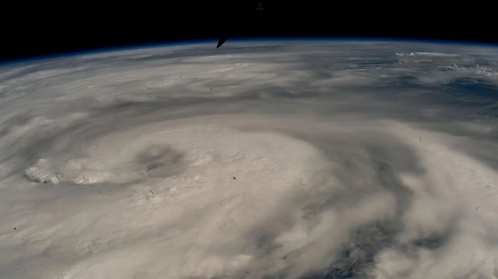

Gauge observations
USGS
Seven days of hourly streamflow describe the river leading up to issue time. Future observations verify each forecast. Missing or rejected labels stay missing.
USGS Water Data ↗AGU26 / HYDROLOGY
Can deep learning improve the National Water Model’s next 18 hourly streamflow predictions using a week of gauge readings and HRRR weather forecasts?
New River Gorge, West Virginia Regional view · NPS / Dave Bieri
Full-input refits · pooled over H1–H18 · range across three network families
lower squared error
lower squared error
of the NWM benchmark
The motivation
Hurricane Helene’s flooding in the Appalachians in September 2024 motivated a question. Could machine learning use a river’s recent behavior to improve its national forecast?
We focused on May 2021 through April 2023, when archived National Water Model (NWM) forecasts were available with their original one- through 18-hour lead times. We used the first year to develop the models and the second to evaluate them.

Research design
We used supervised machine learning at Jefferson, Galax and Sugar Grove. At each gauge and forecast lead, the training target was the observed flow minus the matching NWM forecast. Each network learned from past examples of that error to correct new forecasts.
Gauge observations
Seven days of hourly streamflow describe the river leading up to issue time. Future observations verify each forecast. Missing or rejected labels stay missing.
USGS Water Data ↗National forecast
Archived short-range streamflow supplies the starting forecast. The NWM issue time sets the clock, and its original hourly leads H1–H18 line up with their exact valid times.
NOAA National Water Model ↗Basin weather & soil
One eligible HRRR forecast cycle supplies basin-average precipitation, temperature, humidity and snow. Its initial soil-moisture field adds catchment context.
NOAA High-Resolution Rapid Refresh ↗We started with three USGS station CSVs, a BigQuery export of NWM short-range forecasts and a cache of basin averages from six-hourly HRRR forecast cycles. The source files retained gauge and reach identifiers, forecast clocks, quality flags and weather coverage.
Each row represents one gauge at one NWM issue hour. We joined its previous 168 hours of flow to the original NWM H1–H18 forecasts. We chose the latest eligible HRRR cycle issued at or before that NWM hour, matched its hourly weather by valid time and attached soil moisture from the start of the same cycle. Future gauge observations supplied the labels.
The three gauges and three periods produced nine panels with 52,560 nominal gauge-hours, including incomplete and boundary rows. Historical forecast publication and the USGS revisions available at issue time remain unverified. The results describe the archived record.
Source files and construction records ↗History, issued forecasts and verification had to stay inside their assigned period. Certain absent gauge-history slots could use an accepted earlier reading up to two hours old. Missing forecasts and missing or rejected labels kept their masks. Paired models and input removals used the same eligible cases.
Scales came from the training window at each gauge. For the final refits we rebuilt the first year as one continuous period, including NWM and HRRR source records at the former February split.
Model architecture
The three networks see the same gauge history, soil moisture and issued flow and weather forecasts. Each learns how much streamflow to add to or subtract from NWM at each of the next 18 hours. Follow the arrows to compare how recurrence, convolution and attention learn that correction.
Carry the river’s recent history forward one forecast hour at a time.
A long short-term memory (LSTM) encoder reads 168 hourly gauge inputs in order. Projected soil moisture initializes its hidden state. The encoder passes its final hidden and cell states to the decoder.
At each lead, the decoder combines the issued forecast inputs, the lead number and the same soil context. A shared linear layer converts each decoder state into a correction.
Combine a memory of past flow with patterns across neighboring forecast hours.
A gated recurrent unit (GRU) encodes the gauge history, starting from a hidden state set by soil moisture. In parallel, two width-three convolutions scan the issued NWM and HRRR forecast sequence. Interior leads can use a five-hour forecast neighborhood.
For each lead, the network joins the final GRU state, the local convolution output, soil context and lead number. A shared multilayer perceptron (MLP) uses two linear layers to turn those features into a correction.
Let each forecast hour attend to the parts of the previous week that help predict its error.
The encoder groups 168 hours of gauge history into 56 ordered three-hour patches. It adds learned positions and uses self-attention to encode the patches. A projected soil-moisture token joins that memory after the encoder.
The 18 issued forecast tokens carry their lead positions. The decoder uses self-attention across these known forecasts and cross-attention to the memory. A shared multilayer perceptron (MLP) reads out one correction per lead.
Fit local weights and scales.
Select the trained epoch. Refit on the full first year for that many epochs.
Score frozen forecasts on matching cases. Earlier studies had used this year.
Each family used one training recipe across sites and learned separate weights at each gauge. Three gauges × three families × three seeds × nine input sets yielded 243 development models and 243 first-year refits. Checkpoints minimized pooled normalized squared error on validation with patience 10. Evaluation used RMSE, MAE, original Kling–Gupta efficiency, Nash–Sutcliffe efficiency and Pearson correlation. Signed and percent bias were secondary diagnostics.
Results by forecast lead
At Galax, all three deep-learning models reduced mean absolute error (MAE) relative to NWM from hours 5 through 18, averaged across three seeds. Through hour 7, simply repeating the latest gauge reading beat all three. Explore how the balance changes at the other gauges.
New River · Virginia
Reduction in mean absolute error relative to NWM
All three networks have lower MAE than NWM from H5 through H18. Through H7, repeating the last gauge reading beats every network.
| Lead | NWM MAE | LSTM | GRU+Conv | Transformer | Persistence |
|---|---|---|---|---|---|
| H1 | 2.71 | −35.0% | −21.1% | −28.1% | +70.6% |
| H2 | 3.23 | −20.8% | −10.1% | −11.8% | +53.8% |
| H3 | 3.73 | −8.0% | +1.3% | −1.0% | +42.1% |
| H4 | 4.26 | −0.4% | +8.8% | +1.6% | +34.0% |
| H5 | 4.81 | +4.5% | +13.6% | +9.7% | +28.6% |
| H6 | 5.40 | +8.1% | +17.4% | +12.1% | +25.2% |
| H7 | 6.07 | +11.4% | +20.6% | +15.9% | +23.5% |
| H8 | 6.80 | +14.5% | +23.5% | +19.2% | +23.3% |
| H9 | 7.60 | +17.3% | +26.1% | +22.4% | +23.8% |
| H10 | 8.40 | +19.2% | +28.0% | +24.4% | +24.6% |
| H11 | 9.19 | +20.4% | +29.3% | +26.3% | +25.1% |
| H12 | 9.91 | +21.3% | +30.1% | +27.8% | +25.3% |
| H13 | 10.58 | +21.8% | +30.6% | +28.3% | +25.1% |
| H14 | 11.18 | +22.1% | +30.9% | +28.8% | +24.7% |
| H15 | 11.71 | +22.2% | +31.0% | +28.9% | +23.8% |
| H16 | 12.18 | +22.2% | +31.0% | +29.1% | +22.8% |
| H17 | 12.58 | +22.0% | +30.3% | +28.7% | +21.5% |
| H18 | 12.93 | +21.5% | +26.4% | +28.5% | +20.0% |
South Fork New River · North Carolina
Reduction in mean absolute error relative to NWM
The LSTM and GRU+Conv have lower MAE than NWM at every lead. A linear regression on NWM remains competitive in pooled squared error.
| Lead | NWM MAE | LSTM | GRU+Conv | Transformer | Persistence |
|---|---|---|---|---|---|
| H1 | 0.58 | +16.3% | +12.4% | −21.6% | +53.5% |
| H2 | 0.92 | +27.6% | +25.8% | +13.3% | +43.7% |
| H3 | 1.31 | +33.1% | +28.9% | +21.4% | +42.8% |
| H4 | 1.72 | +37.5% | +35.5% | +26.6% | +44.2% |
| H5 | 2.14 | +40.7% | +38.5% | +33.4% | +45.8% |
| H6 | 2.51 | +42.6% | +39.5% | +36.7% | +46.6% |
| H7 | 2.82 | +43.6% | +39.3% | +37.2% | +46.2% |
| H8 | 3.06 | +44.0% | +38.6% | +39.1% | +44.9% |
| H9 | 3.24 | +43.8% | +37.7% | +37.7% | +42.8% |
| H10 | 3.36 | +43.3% | +37.3% | +37.1% | +40.1% |
| H11 | 3.45 | +42.8% | +36.9% | +37.1% | +37.2% |
| H12 | 3.51 | +42.3% | +36.7% | +36.2% | +33.8% |
| H13 | 3.54 | +41.9% | +36.5% | +35.5% | +30.3% |
| H14 | 3.57 | +41.3% | +36.2% | +35.9% | +26.9% |
| H15 | 3.59 | +40.7% | +35.9% | +34.7% | +23.5% |
| H16 | 3.60 | +39.9% | +35.3% | +33.4% | +20.2% |
| H17 | 3.60 | +39.1% | +33.9% | +32.6% | +16.8% |
| H18 | 3.60 | +38.1% | +29.6% | +31.9% | +13.6% |
Watauga River · North Carolina
Reduction in mean absolute error relative to NWM
The Transformer has higher MAE than NWM at all 18 leads. Its first-hour error more than doubles. The other two networks stay close to NWM.
| Lead | NWM MAE | LSTM | GRU+Conv | Transformer | Persistence |
|---|---|---|---|---|---|
| H1 | 0.32 | −4.0% | −4.0% | −127.6% | +41.9% |
| H2 | 0.51 | −1.8% | +0.1% | −78.5% | +28.7% |
| H3 | 0.71 | −1.1% | +1.0% | −47.0% | +25.4% |
| H4 | 0.90 | −0.2% | +1.4% | −34.4% | +24.4% |
| H5 | 1.06 | +0.7% | +1.6% | −27.9% | +22.4% |
| H6 | 1.17 | +1.3% | +1.6% | −22.6% | +19.5% |
| H7 | 1.26 | +1.8% | +1.6% | −20.2% | +15.6% |
| H8 | 1.32 | +2.0% | +1.5% | −19.6% | +11.3% |
| H9 | 1.36 | +2.1% | +1.4% | −19.8% | +6.7% |
| H10 | 1.40 | +2.1% | +1.4% | −17.4% | +2.6% |
| H11 | 1.41 | +1.9% | +1.3% | −16.8% | −2.2% |
| H12 | 1.42 | +1.8% | +1.3% | −15.8% | −7.3% |
| H13 | 1.43 | +1.7% | +1.2% | −14.8% | −11.6% |
| H14 | 1.44 | +1.6% | +1.2% | −15.5% | −15.6% |
| H15 | 1.45 | +1.3% | +1.1% | −14.6% | −19.1% |
| H16 | 1.46 | +1.0% | +1.1% | −16.3% | −22.3% |
| H17 | 1.46 | +0.7% | +1.0% | −16.1% | −26.4% |
| H18 | 1.46 | +0.5% | +0.9% | −14.9% | −29.9% |
Each line compares MAE on the same observed cases. Positive values mean lower error than NWM. Network lines use the mean across three refit seeds. Persistence repeats the latest eligible gauge reading.
Explore all five metrics, baselines and intervalsDiscussion
Where did deep learning earn its complexity? We compared each network with simple local corrections and retrained it with individual inputs removed. The answer depended on the gauge, forecast lead and metric.
Explore all input removals ↗Removing it and retraining raised pooled squared error by 16–30% at Jefferson and 22–61% at Galax. The experiments measure predictive contributions under a fixed recipe. They cannot isolate a physical cause.
At Jefferson, all three uncertainty intervals for the difference in pooled squared error between a network and a lead-specific linear regression included zero. At Galax, persistence retained a higher Kling–Gupta efficiency at every lead.
The three networks stayed within about 1% of NWM’s pooled squared error. At H1, the Transformer’s MAE was 0.73 m³/s, compared with 0.32 m³/s for NWM. The evidence supports local gains at two sites and leaves their hydrologic cause open.
The week starting 8 November 2022 supplied 45–67% of NWM squared error across the gauges. They share storms, so independent flood-event skill remains open. Training used NWM v2.1, while v2.2 supplied 85% of scored cells. The pointwise week-block intervals hold the three fitted seeds fixed and undercovered in calibration.
AGU26 · Poster H51P-1404
Author affiliation
The University of Texas at Austin
Author affiliation
Computer Science
Geological and Environmental Sciences
The Grandview regional photograph is by Dave Bieri, National Park Service. NASA’s Expedition 72 crew photographed Helene over the Gulf of Mexico. Both images were resized for the web. NPS photograph · NASA photograph
The universities’ public wordmarks identify author affiliations. The AGU mark identifies the meeting. UT Austin brand guide · App State logo guide · AGU mark, DGOvwCWp, unmodified (CC BY-SA 4.0)
All numerical figures come from the reviewed evaluation. The authors froze models and scoring before opening the year in this campaign. The same historical year had already served as validation or test in earlier work. Reviewed findings · Technical report · Public chart data